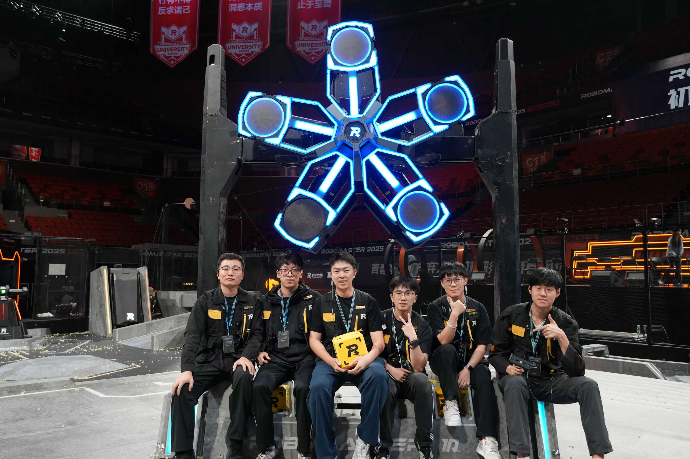
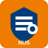
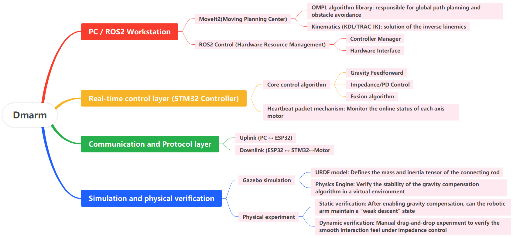
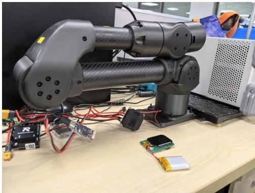

QS 排名第 8，GPA 4.1/5.0，Excellent Student Leader。
Hardware Product Manager · Project Management
张硕｜个人作品集
新加坡国立大学电子工程硕士在读，关注从用户需求、产品定义、技术方案到工程交付的完整链路。 作品集重点展示激光硬件产品、RoboMaster 机器人与 6 轴机械臂系统中的产品思考、项目管理和工程落地能力。

负责新产品体验测试、融合产品预立项和竞品数据自动化系统。
战队副队长，负责赛季项目推进、招商、步兵与能量机关核心交付。
PRD、WBS、里程碑计划、风险管理、问题闭环与 ROI 分析。
Awards
获奖经历
全国大学生机器人大赛机甲大师超级对抗赛 全国八强
南部赛区冠军、全国八强；步兵机器人实战奖全国二等奖
2022 广东省电子设计大赛三等奖
深圳大学荔园之星奖学金、优秀学生干部、优秀毕业生
Experience
实习经历
2026.05 - 至今
xTool｜激光产品线 硬件产品经理
在激光产品线参与新产品体验测试、融合产品预立项与竞品数据系统建设， 用用户场景验证、VOC 分析和自动化数据采集支撑产品定义与商业决策。


- 负责激光新产品软硬件全链路体验测试，覆盖设备安装、软件连接、加工流程、异常处理等关键用户场景，输出 10+ 条结构/交互/软件体验问题，半数进入研发排期。
- 参与 P 系列与 MetalFab 系列融合产品立项，分析 300+ 条有效 VOC、访谈 5 位核心用户，围绕耗材参数、售价、激光类型和功率、软件功能、加工幅面、旋转与送料配件等识别用户痛点。
- 对比 10 款+竞品数据，配合产品负责人完成整机需求与技术可行性评估、成本测算、存量转化率与销量预估，输出立项 PRD 并通过评审。
- 独立负责 MetalFab 系列激光焊接机配件产品，为用户解决使用铝丝焊接导致堵丝的痛点，拉齐结构、测试、包装、认证、市场共同参与，配件将作为独立 SKU 上架售卖。
- 基于 AI 辅助编程搭建竞品数据自动化采集 Web 系统，抓取并整理 200+ 条竞品动态，提升竞品调研效率。
2025.05 - 2025.08
大疆创新 RoboMaster｜场地道具执行
参与 RoboMaster 超级对抗赛区域赛和全国赛的执行工作，负责战场内场地道具的搭建、验收、维护与赛中异常响应， 保障道具系统稳定运行和比赛流程正常推进。
在赛事执行过程中对接裁判、赛务、技术支持等多方角色，理解大型机器人赛事在现场交付、系统稳定性、风险预案与跨团队协作方面的要求。

Education
教育背景
2025.08 - 2027.02

新加坡国立大学｜电子工程硕士
GPA 4.1/5.0，获 Excellent Student Leader。
2021.09 - 2025.07
深圳大学｜电子信息工程本科
GPA 3.75/4.5，CET-6 513。获荔园之星奖学金、优秀毕业生、 优秀学生干部、双创之星等荣誉。
Core Work
核心项目
硬件产品 ｜ 技术成果
RoboMaster 机甲大师超级对抗赛 2023｜2024

RoboMaster 机甲大师赛，深圳大学 RobotPilots 战队，担任副队长/招商经理、步兵/能量机关负责人，覆盖 2023/2024 赛季。
职责：负责步兵机器人、能量机关项目推进及战队运营管理。
过程：负责步兵机器人和能量机关的产品规划与需求定义，基于规则、历史方案、对手设计梳理核心功能需求，制定技术方案与成本约束；组织研发完成需求拆解、技术方案评审与风险评估，推动项目从预研、样机迭代、测试到正式参赛；建立赛季 WBS 与里程碑计划，跟踪研发进度，管控交付超时、成本超预算、人员变动、软硬件稳定性等风险与验收；明确 RACI 分工，减少需求不清、责任重叠和进度无人跟进的问题。
结果：步兵按计划完成关键里程碑，项目完成度高，正式比赛中发挥较高上限；能量机关完成版本迭代并按期交付；获得南部区域赛季军、总决赛八强、全国一等奖。
职责：负责对外招商赞助、校院方研发经费筹集。
过程：撰写招商手册，通过公开渠道与行业企业建立联系，进行商务谈判，沟通赞助权益，强调战队商业价值；签约后跟进权益落地、物料交付与宣传露出，保障合作闭环。利用个人资源获得与电信学院院长面对面沟通机会，提出建立院队合作培养关系。
结果：签约 7 家赞助商，总计 5 万元现金和 6 万元物资，获得 2024 赛季战队优秀招商小组奖项；成功与电信学院建立院队合作关系，获批经费超过 20 万元。
职责：步兵和能量机关负责人，承担步兵电控、能量机关电控和硬件工作。
过程：负责步兵整机电控、硬件布局优化、视觉/机械联调与能量机关系统设计，推动关键技术点从需求定义到工程实现。基于 STM32F4 完成底盘运动控制、云台姿态控制、发射控制、功率限制、多设备通信等核心功能开发；负责能量机关系统结构、硬件主控/灯板/触屏终端、整机电控和周期维护，从微动开关方案迭代到官方传感器方案，并配合视觉组完成能量机关激活任务。
结果：步兵组获得 2023 赛季机器人实战二等奖，帮助团队获得 2023 赛季南部区域赛冠军、全国赛八强；能量机关从 2023 赛季沿用至今，主导设计方案获官方开源三等奖，并被数十支战队采用；两个赛季中步兵能量机关激活能力与准确率稳居前 5。
2024 南部区域赛季军 / 全国八强
2023 南部区域赛冠军 / 全国八强
31W+ 现金、物资与经费
硬件产品｜技术成果
6 轴机械臂系统 2025｜2026


新加坡国立大学科研项目，提出适用于六轴机械臂的低延迟轨迹规划与柔顺控制框架， 承担从机械结构、控制硬件到嵌入式软件的全栈工程实现。
科研项目，目标是验证适用于六轴机械臂的低延迟轨迹规划与柔顺控制框架。
设计硬件并完成 3D 打印、电机选型和整机装配；ROS2 基于 Gazebo / MoveIt 实现运动学逆解算与轨迹规划，STM32F4 负责电机运动控制与状态上报，ESP32 负责可视化监控与功能控制。
加入重力补偿与阻抗控制策略，提升机械臂运动柔顺性与交互安全性；实现完整轨迹规划与柔顺控制系统，一作，机器人期刊在投。
ROS2 Gazebo / MoveIt
STM32F4 电机控制与状态上报
一作 机器人期刊在投
Documents
材料展示框架
这里保留当前项目材料总索引；后续新增文档时，会同步放入对应核心项目卡片。
Strengths
能力关键词
PRD 撰写
WBS 拆解
里程碑计划
风险管理与问题闭环
VOC 与用户原声分析
成本测算与 ROI 分析
Office / 飞书 / XMind / Figma
ROS2 / STM32 / SolidWorks
C++ / Python / MATLAB
英语技术文档与商务沟通
Other
个人爱好
摄影
主题为自然风光、人像。设备包括索尼 a6700（18-135 变焦、35 定焦）、大疆 Action 5 Pro、Pocket 4、Mini 3 Pro。
数字制造与动手实现
喜欢用 3D 打印机和激光雕刻机把想要的东西变为现实，主要使用拓竹 X2D、P1S、A1，以及 xTool F2 UV 和 P3。
Contact